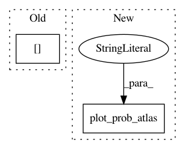

f816b2d21de51ea97a45d8cbece6a528848c56e4,examples/03_connectivity/plot_compare_decomposition.py,,,#,33
Before Change
title="%s" % names[estimator],
cut_coords=cut_coords, colorbar=False)
// 3D plotting
plot_stat_map(index_img(components, indices[estimator]),
title="%s" % names[estimator],
cut_coords=cut_coords, colorbar=False)
show()
After Change
// Visualize the results
//
// First plot all DictLearning components together
plot_prob_atlas(dictlearning_components_img,
title="All DictLearning components")
//////////////////////////////////////////////////////////////////////////////////////////////////////////////////////////////////////////////////////////////
In pattern: SUPERPATTERN
Frequency: 3
Non-data size: 2
Instances
Project Name: nilearn/nilearn
Commit Name: f816b2d21de51ea97a45d8cbece6a528848c56e4
Time: 2019-04-18
Author: gael.varoquaux@normalesup.org
File Name: examples/03_connectivity/plot_compare_decomposition.py
Class Name:
Method Name:
Project Name: nilearn/nilearn
Commit Name: 989ee60856e201cb7bdd0c6c585834e18d528046
Time: 2019-04-16
Author: jacobwvogel@gmail.com
File Name: examples/03_connectivity/plot_compare_decomposition.py
Class Name:
Method Name:
Project Name: nilearn/nilearn
Commit Name: 235e5529f9eb0a941b0712b6562308a936cd326f
Time: 2015-12-02
Author: dkamalakarreddy@gmail.com
File Name: examples/connectivity/plot_extract_regions_statistical_maps.py
Class Name:
Method Name: